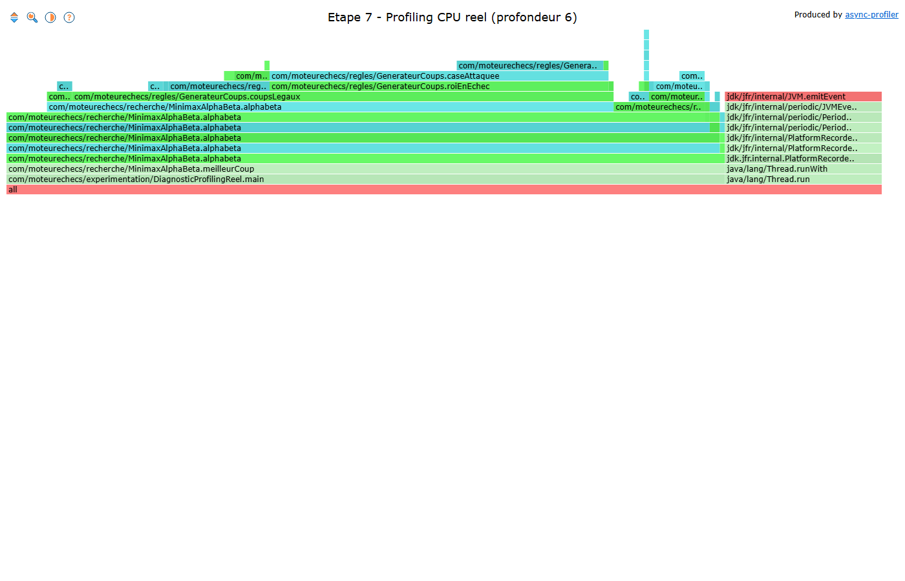
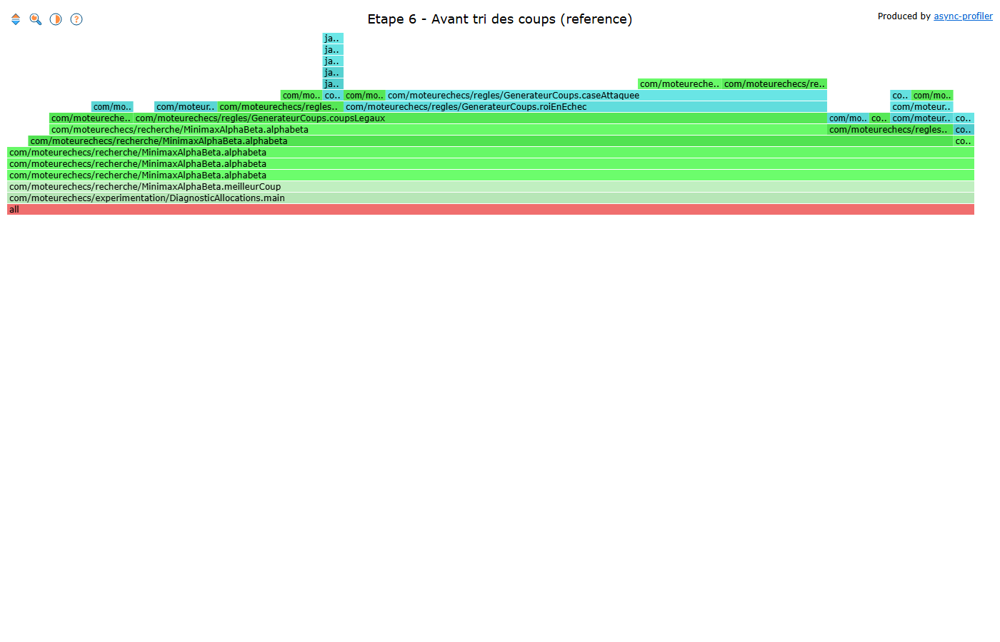
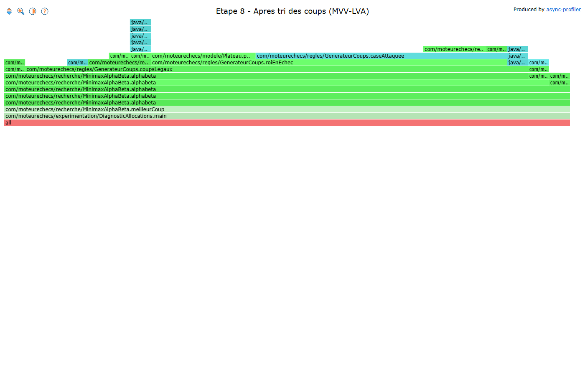

MoteurEchecs — Moteur d'échecs Minimax / Alpha-Beta
Ce document audite les optimisations appliquées à MoteurEchecs, un moteur d'échecs Minimax avec élagage Alpha-Beta développé en Java 21. Il couvre l'ensemble du cycle d'optimisation : architecture, profiling matériel, leviers algorithmiques et micro-architecturaux, gestion mémoire, et confrontation critique des choix effectués.
Discipline d'ingénierie appliquée de bout en bout : réduction de la complexité algorithmique avant optimisation du code (macro avant micro) · toute affirmation de gain systématiquement mesurée, jamais supposée · chaque optimisation avancée guidée par un profiling réel préalable · résultats rapportés tels quels, y compris modestes ou négatifs.
| Composant | Spécification |
|---|---|
| Processeur (CPU) | AMD Ryzen 7 5700U (8 cœurs / 16 threads, 1,8 GHz base, Boost 4,3 GHz, architecture Zen 2 "Lucienne") |
| Hiérarchie caches | L1 : 32 Ko (données) + 32 Ko (instr.) par cœur · L2 : 512 Ko/cœur · L3 : 8 Mo partagé (spécifications constructeur AMD) |
| Mémoire vive (RAM) | 8 Go DDR4-3200 (2×4 Go) |
| Système & Runtime | Windows 10 Famille 64-bit (10.0.19045) · OpenJDK Temurin 21.0.12.1+1 LTS |
| Protocole métrologique | hyperfine --warmup 1 --runs 5 (moyenne ± écart-type) · JFR settings=profile (jdk.ObjectAllocationSample, jdk.ExecutionSample, jdk.GCHeapSummary) · résultats sensibles répétés 2-3 fois pour vérifier la reproductibilité |
| Version | Stratégie | Type | Prof. | Temps | Positions | Allocations | Pic mémoire | Gain cumulé |
|---|---|---|---|---|---|---|---|---|
| V0 | Minimax naïf (baseline) | — | 4 | 8 465 ms | 206 603 | — | ~58-71 MB | non comparable* |
| V1 | Élagage Alpha-Beta | Macro | 5 | 1 999 ms ±58 | 41 554 | 600 éch. | ~69 MB | référence |
| V2 hors chaîne | Bitboards — mesure isolée, non intégrée au moteur | Micro | — | — | — | — | — | ×1,3 sur l'opération isolée uniquement |
| V3 | Zéro-allocation (détection d'échec + make/unmake) | Micro | 5 | 475,3 ms ±37,8 | 41 554 | 120 éch. | ~52-55 MB | ×4,2 |
| V4 | Alignement mémoire (vérifié, rien à corriger) | Micro | 5 | inchangé | 41 554 | 120 éch. | inchangé | ×4,2 |
| V5 | Pré-allocation de capacité | Micro | 5 | 426,3 ms ±35,8 | 41 554 | 120 éch. | ~46-47 MB | ×4,7 |
| V6 | Profiling réel & identification du Hot Path | Diagnostic | 6 | ~2,06 s | 645 199 | dominé par l'allocation de Coup | — | — |
| V7 | Tri des coups (MVV-LVA) | Macro | 5 | voir note** | 25 319 (−39% vs V5) | 132 éch. | — | ×1,22 ±0,14 vs V5 |
| V8 | Recherche à budget de temps | Macro (capacité) | 1-6 variable | voir §3.2 | 7 224-569 956 | — | — | N/A |
| V9 Échec | Cache naïf de détection d'échec | Diagnostic critique | 5 | 709,0→1 481 ms | 25 319 (inchangé vs V7) | 132→462 éch. | — | ×2,09 plus lent — rejeté |
* V0 (Minimax naïf) et V1 (Alpha-Beta) exécutent deux algorithmes de complexité différente — l'écart de temps entre eux reflète un nombre de positions radicalement différent (206 603 vs 41 554), pas la même charge de travail accélérée. Aucun facteur de gain n'est donc calculé entre V0 et V1 ; V1 sert de référence pour tous les gains cumulés suivants.
** V0 à V6 partagent une session de mesure continue. V7 a fait l'objet d'une vérification dédiée en comparaison directe, dans une session unique et contrôlée : V5 remesurée à 873,6 ms ±22,5 comme référence immédiate, V7 à 714,9 ms ±78,0, soit ×1,22 ±0,14 plus rapide que V5 (test statistique A/B, 5 essais chacune). C'est ce facteur relatif — pas une valeur absolue isolée — qui doit être retenu pour situer V7 ; la valeur de 709,0 ms utilisée plus bas comme référence de l'échec constructif (V9) provient d'une session de mesure distincte, à moins de 1% de cette vérification. Positions évaluées : métrique déterministe, insensible aux conditions machine, valable en toutes circonstances.
Résultat contre-intuitif, stable sur 3 runs : l'évaluation de position ne pèse jamais plus de 4% du temps CPU — le vrai goulot est la vérification de légalité (59-72%). Cette mesure, fondée sur le temps CPU, et le diagnostic d'allocations ayant motivé V3 (fondé sur le volume mémoire) convergent indépendamment sur la même fonction : elles confirment ensemble que la vérification de légalité était la bonne cible à optimiser, chacune sur son propre axe de mesure. Ce même constat justifie directement le tri des coups (V7), qui réduit le nombre d'appels à cette fonction plutôt que son coût unitaire.
| Budget | Profondeur | Temps réel | Coup |
|---|---|---|---|
| 200 ms | 4 | ~211-216 ms | b1c3 |
| 500-2000 ms | 5 (prof. 6 tentée, jetée) | ±0,3-8% du budget | b2b3 |
| 5000 ms | 6 | ~5000-5008 ms | b1c3 |
Profils CPU capturés via Java Flight Recorder et rendus en flamegraph interactif (async-profiler).



Nuances méthodologiques : la première capture inclut ~2% de frames internes au mécanisme de profiling, non filtrées dans le tableau de pourcentages associé. Les deux profondeurs présentées (6 et 5) ne sont pas comparables visuellement entre elles, le volume de positions croissant d'un facteur ×15-16 par profondeur supplémentaire.
| Méthode testée | Résultat | Verdict |
|---|---|---|
| Runtime.totalMemory()-freeMemory() lu dans le code | 3 081-27 655 KB sur 3 runs identiques | Rejeté ×9 d'écart, instant de mesure arbitraire |
| jdk.GCHeapSummary (pic "Before GC") | 1-3% d'écart entre runs | Retenu |
| Version | Pic mémoire | vs V1 |
|---|---|---|
| V1 — Alpha-Beta (référence) | ~69 MB | référence |
| V3 — Zéro-allocation | ~52-55 MB | −22% |
| V5 — Pré-allocation | ~46-47 MB | −32% |
La loi d'Amdahl a guidé le séquencement des leviers tout au long de ce projet (priorité systématique au facteur dominant). Une vérification numérique a été menée à partir d'une mesure d'accès mémoire contrôlée (écart de latence entre deux dispositions de données, isolé indépendamment du calcul applicatif) :
| Écart mémoire pur mesuré (disposition contiguë vs chaînée) | 8-10 ns/candidat |
| Temps total par opération incluant le calcul applicatif | ~870-900 ns |
| P (poids de la portion mémoire dans le temps total) | ≈1,02% |
| S (accélération mesurée sur cette portion isolée) | ×8 à ×10 |
S_global = 1 / ((1-P) + P/S) ≈ 1,009 — gain global théorique plafonné à ~0,9%, même avec une accélération infinie sur la portion mémoire (S→∞, plafond ≈1,0%). Ce résultat a été confronté à une mesure empirique indépendante sur le même système, qui a montré un écart de −2,50% entre les deux dispositions testées — un écart cohérent avec le plafond théorique calculé, confirmant que la portion mémoire n'était pas le facteur dominant dans ce contexte précis. Ce calcul quantifie a posteriori le principe qui a gouverné le séquencement des leviers sur MoteurEchecs : l'élagage Alpha-Beta a été priorisé sur la base de sa complexité algorithmique dominante (O(b^d)), une décision de nature macro-algorithmique distincte de ce calcul de latence mémoire, que ce dernier vient illustrer et corroborer plutôt que motiver.
| Version | Choix | Pourquoi |
|---|---|---|
| V0 | Architecture en couches, Minimax naïf | Baseline propre, chaque futur levier touche un seul module |
| V1 | Alpha-Beta avant toute micro-optimisation | La complexité algorithmique O(b^d) domine largement tout gain constant — optimiser un facteur secondaire est invisible tant que le facteur dominant n'est pas traité (loi d'Amdahl) |
| V2 | Bitboards mesurés, non intégrés | Gain isolé (×1,3) jugé insuffisant pour justifier la réécriture complète de la structure de données |
| V3 | Zéro-allocation, détection directe des patterns d'attaque | Le diagnostic d'allocations a révélé que le vrai coût n'était pas la copie de plateau supposée initialement, mais la génération d'une liste complète de coups pour un test unitaire |
| V4, V5 | Alignement mémoire vérifié, pré-allocation de capacité | Vérification systématique des leviers micro-architecturaux applicables en Java |
| V6 | Premier profiling CPU réel (flamegraph) | Toutes les décisions précédentes reposaient sur du raisonnement structurel — nécessaire de confirmer par la mesure |
| V7 | Tri des coups plutôt qu'une table de transposition | Le profiling montre légalité + génération à ~90% du temps CPU — le tri cible ce goulot directement et réduit le volume de travail plutôt que son coût unitaire |
| V8 | Recherche à budget de temps | Un moteur qui ne cherche qu'à profondeur fixe est inutilisable sous une contrainte de temps réelle — l'iterative deepening avec annulation précoce corrige ce point |
| V9 | Échec constructif délibéré | Tentative documentée sur une hypothèse réaliste issue du Hot Path mesuré, pas un exemple artificiel |
| Mesure | Sans cache | Avec cache |
|---|---|---|
| Temps (moyenne, 5 essais) | 709,0 ms ±27,8 | 1 481 ms ±25 (×2,09) |
| Allocations (échantillons) | 132 | 462 (+250%) |
| Test de recherche à budget de temps | passe | échoue (régression collatérale sur la profondeur atteinte) |
Cause physique : les nouvelles allocations sont dominées par les tableaux d'octets et chaînes de caractères construits pour chaque clé de cache — réintroduction directe de l'anti-pattern éliminé en V3. Le coût de construction de la clé (sérialisation complète des 64 cases à chaque appel) dépasse le coût qu'elle prétend éviter ; sans hachage incrémental, le taux de succès du cache est quasi nul à cette profondeur de recherche.
Verdict : rejeté. Le code a été entièrement retiré et la suite de tests (51 tests) repasse intégralement au vert après retrait. La piste correcte pour un cache de positions performant repose sur un hachage incrémental de type Zobrist plutôt qu'une sérialisation complète recalculée à chaque appel.
Le travail réalisé établit deux résultats de nature distincte, à ne pas additionner l'un à l'autre : un gain de ×4,7 sur le temps de recherche entre la baseline Alpha-Beta et la version pré-allocation (V1→V5), et une réduction indépendante de 39% du nombre de positions visitées apportée par le tri des coups (V7 vs V5), elle-même mesurée avec un gain en temps propre de ×1,22 — inférieur au gain en positions du fait du coût du tri lui-même. Ces deux résultats caractérisent des leviers différents, à des stades différents du moteur, et sont rapportés séparément par souci d'exactitude. Ce qui reste constant sur l'ensemble du parcours, c'est la correction du moteur : la suite de 51 tests reste intégralement verte à chaque étape, y compris des tests d'équivalence mathématique stricte entre l'algorithme naïf et sa version optimisée. La discipline "réduire la complexité avant d'accélérer, mesurer avant d'affirmer" a été appliquée dans l'ordre réel des décisions prises, pas seulement énoncée a posteriori. Les résultats modestes, les écarts entre métriques, et la tentative volontairement ratée sont documentés avec la même rigueur que les succès.
La priorité donnée aux leviers directement mesurables et vérifiables — plutôt qu'une accumulation de leviers ambitieux non prouvés — a produit une base de code entièrement testée et benchmarkée, avec un périmètre couvert précisément délimité : banc d'essai matériel, profiling réel, optimisation mémoire, confrontation critique chiffrée, et reproductibilité automatisée. La concurrence multi-cœurs et la persistance/exposition en service restent hors périmètre de cette version — le mécanisme d'annulation précoce de V8 constitue une base directement réutilisable pour la première, non encore mise en œuvre. C'est ce compromis — rigueur vérifiée sur un périmètre assumé plutôt qu'ambition non prouvée sur un périmètre plus large — qui constitue la meilleure solution atteignable dans ce cadre.
L'intégralité du code source, des scripts de mesure et de la documentation technique détaillée accompagne ce rapport. Un script unique exécute en une seule commande la compilation, la suite de tests complète, puis l'ensemble des diagnostics de performance cités dans ce document (baseline, comparaison mémoire, recherche optimisée, recherche à budget de temps), avec arrêt immédiat et message explicite en cas d'échec.